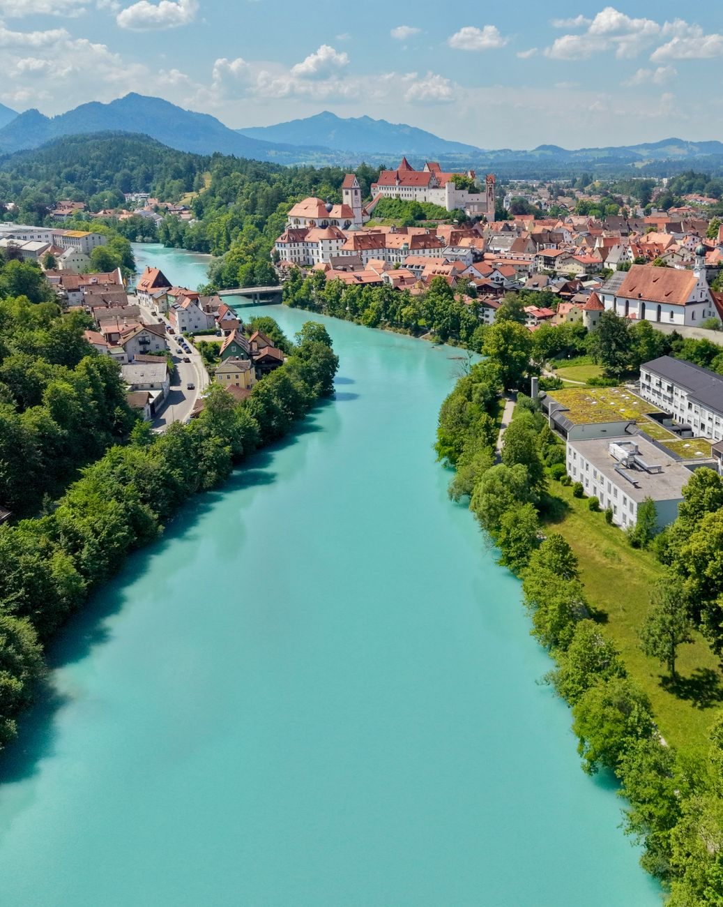
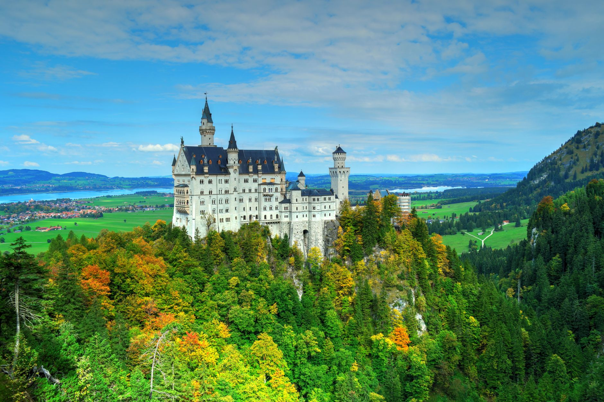
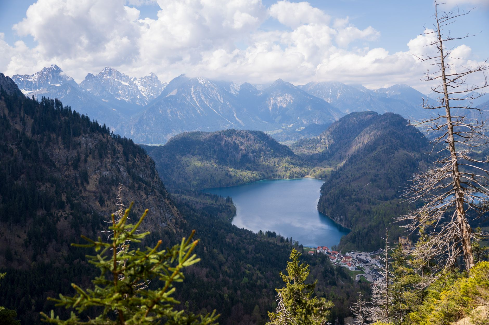
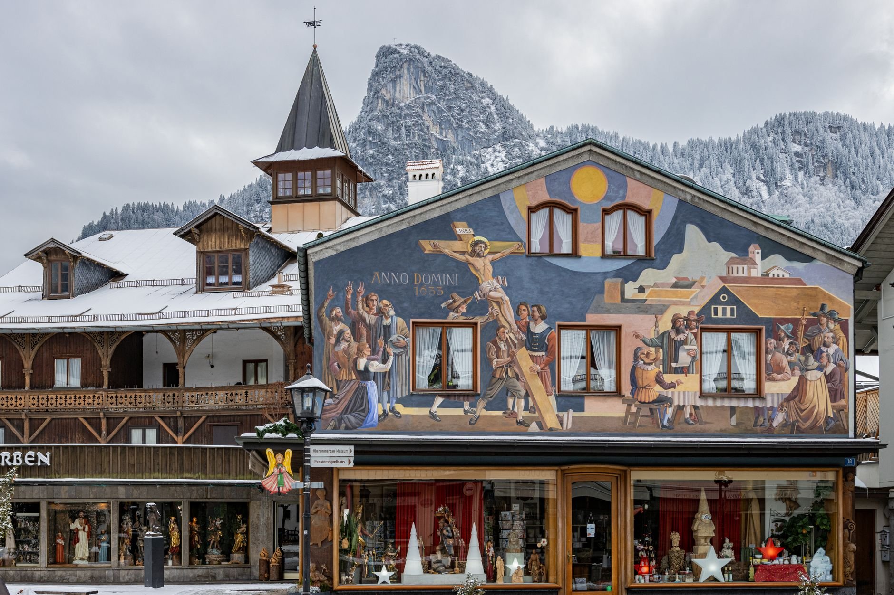
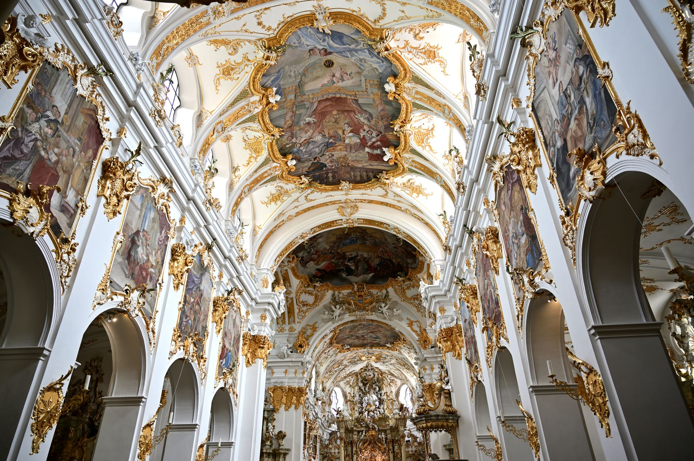

Photo: Oliver Lechner / Pexels
This short loop through southern Bavaria covers Füssen, Hohenschwangau, Schwangau, Oberammergau and Ettal, where the German Alpine Road meets the Romantic Road. The reason to drive it is Hohenschwangau: Neuschwanstein Castle rises directly above the village, and it's the real building widely cited as the model for Disneyland's Sleeping Beauty Castle.
King Ludwig II, who commissioned it, died in 1886 before the castle was finished. Only about a third of the planned interior was ever completed.
-

FussenThe southern base, where the German Alpine Road meets the Romantic Road. -

HohenschwangauNeuschwanstein Castle sits above the village, the real building behind Disneyland's Sleeping Beauty Castle. King Ludwig II died in 1886 before it was finished. -

SchwangauOn the Alpsee lake, with the classic view back up at Neuschwanstein. -

OberammergauKnown for painted house facades and a Passion Play performed once a decade. -

EttalHome to a Benedictine monastery and Linderhof, the one Ludwig II palace he lived to see completed.
Stop photos: Holger Raukamp, Gildo Cancelli, Niels Steinmetz, Oleksandra Zelena, Gutjahr Aleksandr / Pexels
Ettal Abbey's basilica interior is genuinely Baroque, ornate enough to be worth the stop even without the Ludwig II connection next door at Linderhof.
Good to know before you drive it
- Neuschwanstein is only accessible on foot or by shuttle bus from the village; you can't drive up to the castle itself. Park in Hohenschwangau and walk or ride up.
- Tickets to tour the castle interior are timed and often sell out in summer. Book ahead if seeing inside matters to you, not just photographing it from outside.
- Germany's Autobahn has no blanket speed limit on many stretches, but this route is entirely on regional roads with normal posted limits, generally 100 km/h outside towns.
- 56 km is short, but Neuschwanstein alone can eat half a day with tickets and the walk up. Plan accordingly.
Ready to book this drive? This route runs 56 km and about 1.1 hours behind the wheel, entirely inside Auto Europe's coverage area.
We book through Auto Europe. It compares Hertz, Sixt and the other major agencies in one search, with cross-border and one-way terms visible before checkout instead of buried in each company's own fine print.
Compare car rental prices →This is an affiliate link. Booking through it may earn Travel Gap a commission at no extra cost to you.
Read the full Europe road trip planning guide for what to check before you book anywhere on the continent.